Conheça as diferentes histórias que fazem parte do universo de Jojo!
Protagonista:Jonathan Joestar
Ano:1880
Phantom Blood acompanha o protagonista Jonathan Joestar, que foi o primeiro jojo da obra. Jonathan e sua relação com Dio Brando(o maior vilão da família joestar e que aparecera em futuras partes para acabar com a linhagem Joestar) apresenta o início da história da obra e a grande rivalidade que afeta gerações.
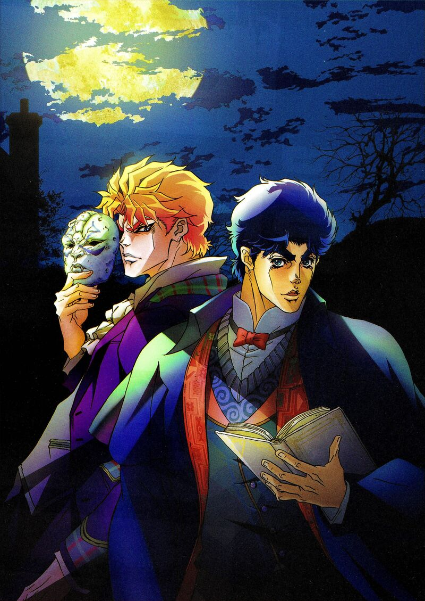
A história acompanha Jonathan Joestar e Dio Brando, que passa a viver com a família Joestar. Dio deseja tomar o lugar de Jonathan e começa a tornar sua vida difícil. Com o passar do tempo, a rivalidade entre os dois se transforma em um grande conflito, envolvendo uma misteriosa máscara de pedra que concede poderes sobrenaturais.
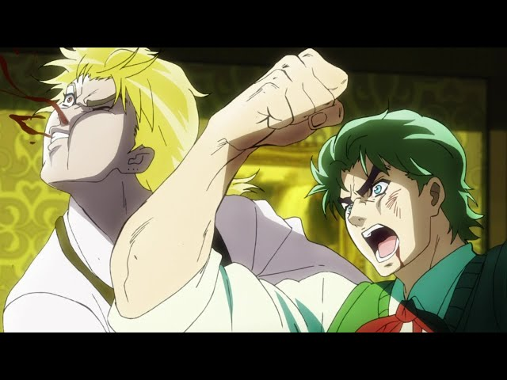
Jonathan enfrenta Dio até o fim. Durante o confronto final, ele se sacrifica para proteger Erina e impedir Dio. Mesmo com sua morte, seu legado continua nas próximas gerações da família Joestar.
Protagonista: Joseph Joestar
Ano em que se passa: 1938
Battle Tendency acompanha Joseph Joestar, neto de Jonathan, que descobre a existência dos Homens do Pilar, seres antigos e extremamente poderosos. Junto de novos aliados, Joseph precisa aprender a dominar o Hamon e enfrentar essas criaturas para impedir que elas ameacem a humanidade.
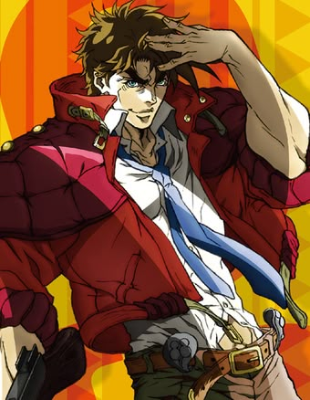
Os 4 Homens do Pilar são seres ancestrais que possuem grande poder e
buscam a Pedra de Aja para alcançar seus objetivos(se tornarem o ser
perfeito). Entre eles estão Kars, Esidisi e Wamuu.
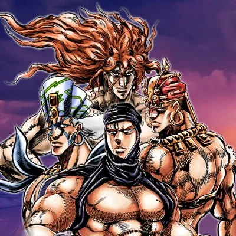
Protagonista: Jotaro Kujo
Ano em que se passa: 1988
Stardust Crusaders acompanha Jotaro Kujo, um jovem que descobre possuir um poder chamado Stand. Quando sua mãe, Holly, fica doente devido ao despertar de seu Stand, Jotaro parte em uma viagem pelo mundo junto de seus amigos para derrotar Dio, que voltou a viver, e salvar sua mãe.
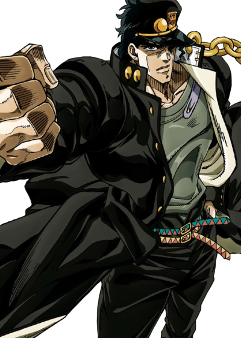
Durante sua jornada, Jotaro e seus companheiros enfrentam diversos usuários de Stand enviados por Dio. O principal inimigo é Dio Brando, que possui grande poder e representa uma ameaça para toda a família Joestar.
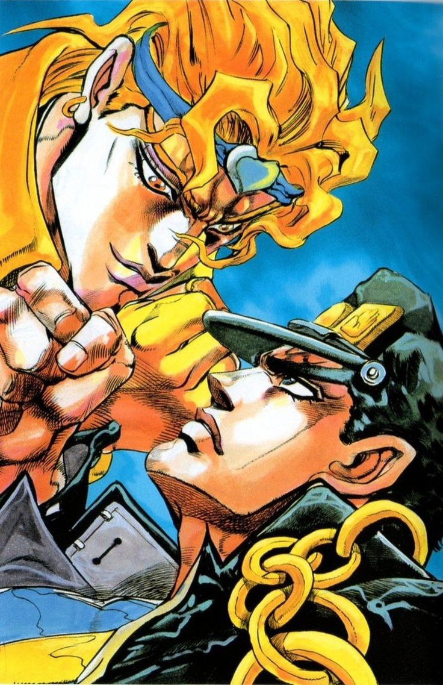
Protagonista: Josuke Higashikata
Ano em que se passa: 1999
Diamond is Unbreakable se passa na cidade de Morioh e acompanha Josuke Higashikata, um jovem que possui o Stand Crazy Diamond. Ao lado de seus amigos, ele enfrenta acontecimentos estranhos que começam a ameaçar a tranquilidade da cidade, incluindo a presença de um perigoso assassino que vive escondido entre os moradores.
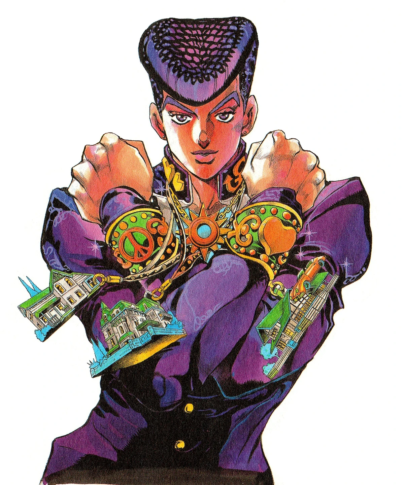
O principal antagonista é Yoshikage Kira, um homem que tenta manter uma vida aparentemente normal em Morioh, mas esconde uma natureza perigosa. Josuke e seus amigos precisam descobrir sua identidade e impedir que ele continue ameaçando a cidade.
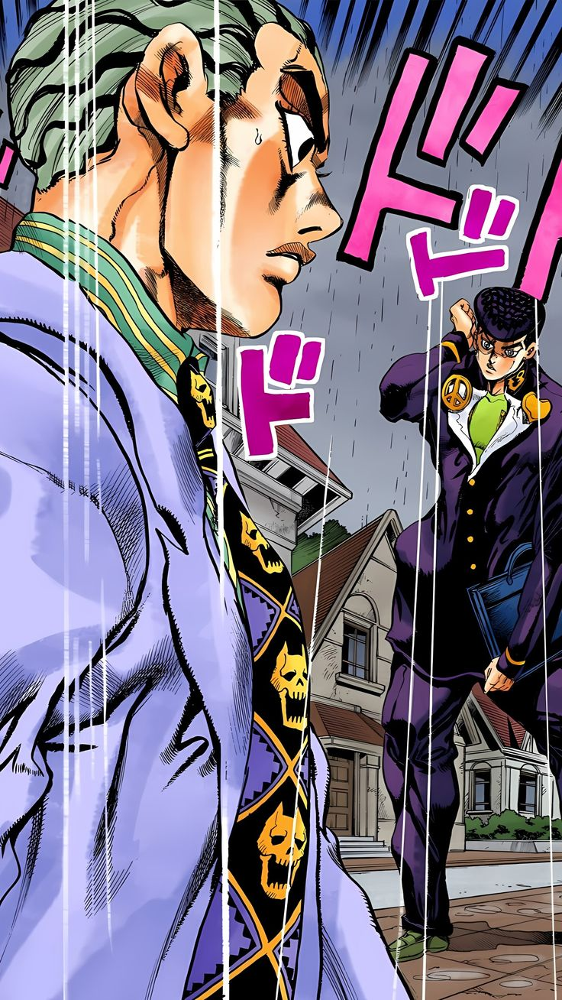
Protagonista: Giorno Giovanna
Ano em que se passa: 2001
Golden Wind acompanha Giorno Giovanna, um jovem que sonha em se tornar um Gang-Star e acabar com o tráfico de drogas que prejudica a população, principalmente os jovens. Para realizar seu sonho, ele entra na organização Passione e se envolve em missões perigosas, enfrentando inimigos e descobrindo os segredos de seus próprios companheiros.
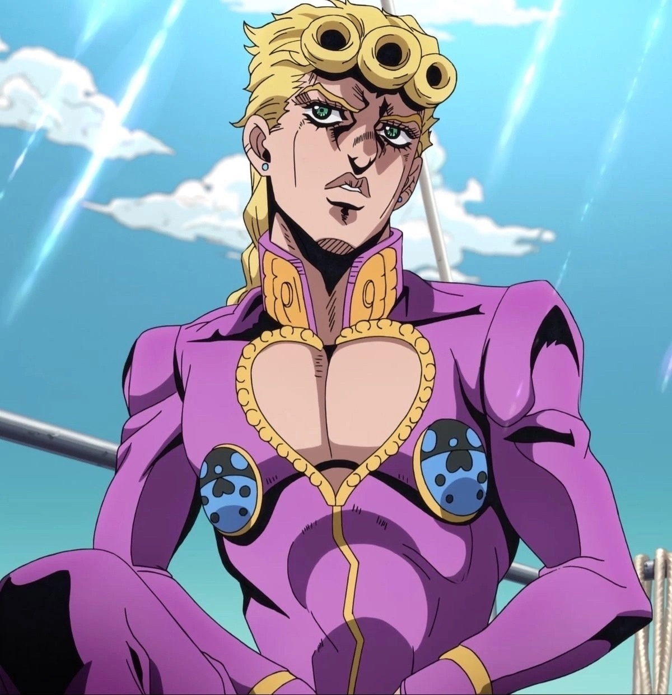
O principal antagonista é Diavolo, o misterioso chefe da organização Passione, que faz de tudo para esconder sua identidade e manter seu poder. Giorno e seus aliados precisam enfrentá-lo para alcançar seus objetivos.
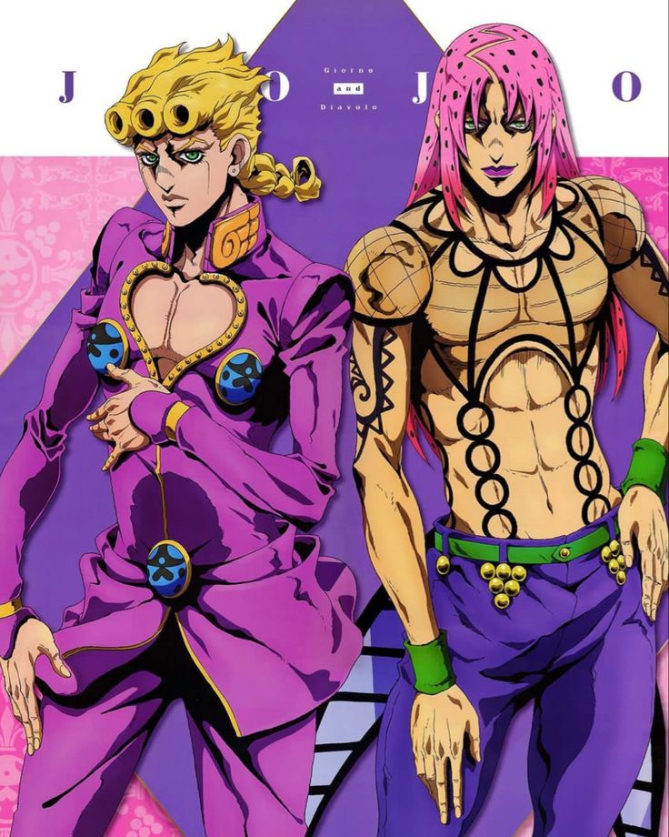
Protagonista: Jolyne Cujoh
Ano em que se passa: 2011
Stone Ocean acompanha Jolyne Cujoh, filha de Jotaro Kujo, que é injustamente condenada e enviada para uma prisão na Flórida. Dentro da prisão, ela desperta seu Stand, Stone Free, e passa a enfrentar diversos inimigos enquanto tenta descobrir uma conspiração envolvendo seu pai e um misterioso plano que ameaça o destino de todos.
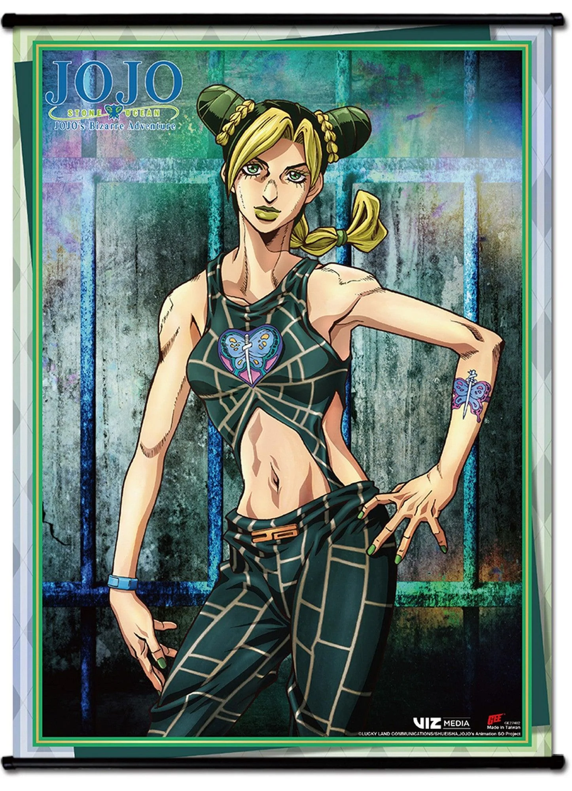
O principal antagonista é Enrico Pucci, um sacerdote que busca realizar um plano relacionado aos ensinamentos de Dio. Jolyne precisa lutar para proteger aqueles que ama e impedir que seus objetivos sejam alcançados.
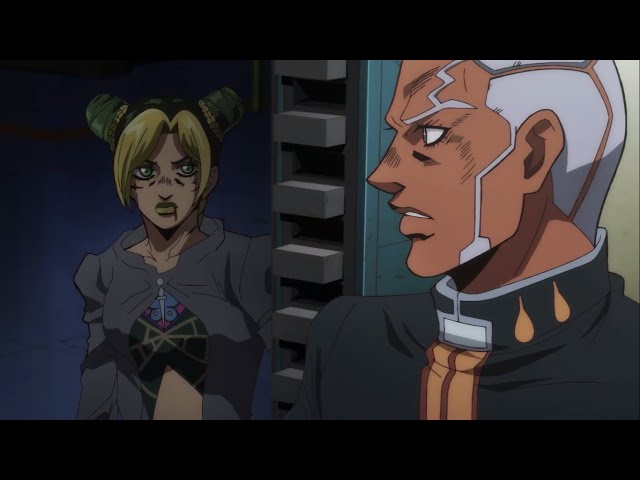